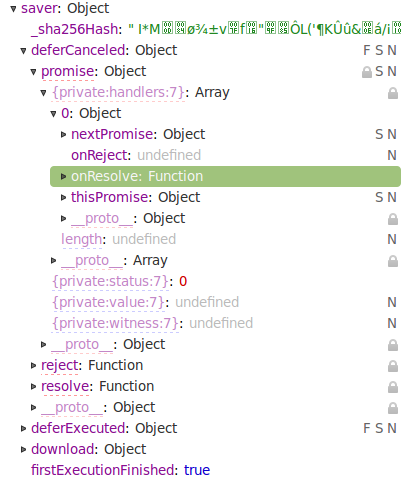
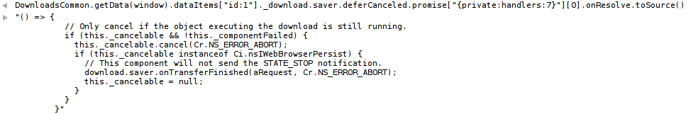

A Promise object represents a value that may not be available yet.
A reference to an existing promise may be received by different means, for example as the return value of a call into an asynchronous API. Once you have a reference to a promise, you can call its then() method to execute an action when the value becomes available, or when an error occurs.
Promises may also be created using the new Promise() constructor. You don't need to import the Promise.jsm module to use a Promise object to which you already have a reference.
Internally, a promise can be in one of three states:
- Pending, when the final value is not available yet. This is the only state that may transition to one of the other two states.
- Fulfilled, when and if the final value becomes available. A fulfillment value becomes permanently associated with the promise. This may be any value, including
undefined. - Rejected, if an error prevented the final value from being determined. A rejection reason becomes permanently associated with the promise. This may be any value, including
undefined, though it is generally anErrorobject, like in exception handling.
{kind=link}
Note: You should always handle, forward, or report errors (rejection reasons). If you see the message "A promise chain failed to handle a rejection", there is likely something to be fixed in the code. See handling errors and common pitfalls below.
Documentation conventions
In documentation, the type of the fulfillment value is usually specified between angular brackets. For example, the OS.File.exists function returns a promise that will eventually fulfill with a boolean:
Promise<boolean> exists(string path);
The rejection reason may be specified separately in the function's documentation, and is considered to be an Error object unless otherwise specified.
Method overview
Promise then([optional] Function onFulfill, [optional] Function onReject); |
Promise catch([optional] Function onReject); |
{kind=link}
Constructor
Creates a new promise, initially in the pending state, and provides references to the resolving functions that can be used to change its state.
new Promise(executor);
Parameters
executor-
This function is invoked immediately with the resolving functions as its two arguments:
executor(resolve, reject);
The constructor will not return until the executor has completed. The resolving functions can be used at any time, before or after the executor has completed, to control the final state of the promise. If the executor throws an exception, its value will be passed to the
rejectresolving function.
Resolving functions
resolve()
Fulfills the associated promise with the specified value, or propagates the state of an existing promise. If the associated promise has already been resolved, either to a value, a rejection, or another promise, this method does nothing.
aValue argument, and then calling it again with another value before the promise is fulfilled or rejected, will have no effect the second time, as the associated promise is already resolved to the pending promise.void resolve( aValue );
Parameters
aValueOptional- If this value is not a promise, including
undefined, it becomes the fulfillment value of the associated promise. If this value is a promise, then the associated promise will be resolved to the passed promise, and follow the state as the provided promise (including any future transitions).
reject()
Rejects the associated promise with the specified reason. If the promise has already been resolved, either to a value, a rejection, or another promise, this method does nothing.
void reject( aReason );
Parameters
aReasonOptional-
The rejection reason for the associated promise. Although the reason can be
undefined, it is generally anErrorobject, like in exception handling.Note: This argument should not be a promise. Specifying a rejected promise would make the rejection reason equal to the rejected promise itself, and not its rejection reason.
Methods
then()
Calls one of the provided functions as soon as this promise is either fulfilled or rejected. A new promise is returned, whose state evolves depending on this promise and the provided callback functions.
The appropriate callback is always invoked after this method returns, even if this promise is already fulfilled or rejected. You can also call the then method multiple times on the same promise, and the callbacks will be invoked in the same order as they were registered.
Warning: If the onFulfill callback throws an exception, the onReject callback is not invoked and the exception won't be caught, nor shown in the console (you will see a promise chain failed error). You can register a rejection callback on the returned promise instead (using catch() or then()), to process any exception occurred in either of the callbacks registered on this promise.
then method multiple times on the same promise, the registered callbacks are always executed independently. For example, if an exception occurs in one callback, it does not affect the execution of subsequent callbacks. The behavior of the callback only affects the promise returned by the then method with which the callback was registered, that is actually a different promise for each invocation of the method.Promise then( Function onFulfill, Function onReject );
Parameters
onFulfillOptional- If the promise is fulfilled, this function is invoked with the fulfillment value of the promise as its only argument, and the outcome of the function determines the state of the new promise returned by the
thenmethod. In case this parameter is not a function (usuallynull), the new promise returned by thethenmethod is fulfilled with the same value as the original promise. onRejectOptional-
If the promise is rejected, this function is invoked with the rejection reason of the promise as its only argument, and the outcome of the function determines the state of the new promise returned by the
thenmethod. In case this parameter is not a function (usually leftundefined), the new promise returned by thethenmethod is rejected with the same reason as the original promise.
Return value
A new promise that is initially pending, then assumes a state that depends on the outcome of the invoked callback function:
- If the callback returns a value that is not a promise, including
undefined, the new promise is fulfilled with this fulfillment value, even if the original promise was rejected. - If the callback throws an exception, the new promise is rejected with the exception as the rejection reason, even if the original promise was fulfilled.
- If the callback returns a promise, the new promise will eventually assume the same state as the returned promise.
catch()
Equivalent to then() with an undefined value for the onFulfill parameter. If you chain then( onFulfill ).catch( onReject ), exceptions thrown in onFulfill will be caught and passed to onReject, which is not the case when just passing onReject to then().
Promise catch( Function onReject );
The following calls are therefore identical:
p.then(undefined, logError); p.catch(logError);
Debugging
By design, the instant state and value of a promise cannot be inspected synchronously from code, without calling the then() method.
To help with debugging, only when inspecting a promise object manually, you can see more information as special properties that are inaccessible from code (this, at present, is implemented by randomizing the property name, for the lack of more sophisticated language or debugger support).
These code-inaccessible, inspectable properties are:
{{private:status}}: 0 for pending, 1 for fulfilled, or 2 for rejected.{{private:value}}: Fulfillment value or rejection reason, for fulfilled or rejected promises only.{{private:handlers}}: Array of objects holding references to functions registered by thethen()method, for pending promises only.

Examples
See the examples page.
Handling errors and common pitfalls
You should report unhandled errors, unless you're handing off the promise to a caller or another code path that will handle the error.
// ###### WRONG: Silently drops any rejection notified by "OS.File.Exists".
OS.File.exists(path).then(exists => { if (exists) myRead(path); });
// ###### WRONG: Silently drops any exception raised by "myRead".
OS.File.exists(path).then(exists => { if (exists) myRead(path); }, Components.utils.reportError);
// CORRECT (for example, might report the exception "myRead is not defined")
OS.File.exists(path).then(exists => { if (exists) myRead(path); })
.catch(Components.utils.reportError);
// CORRECT (the function returns a promise, and the caller will handle the rejection)
function myReadIfExists(path)
{
return OS.File.exists(path).then(exists => { if (exists) myRead(path); });
}
See also
- Promise.jsm
- Deferred
- Examples
- JavaScript OS.File
- Promises, Promises: a useful simple explanation by Stuart Langridge
- WHATWG Living Standard